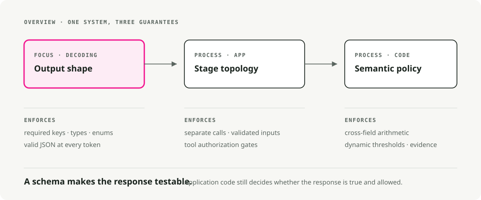
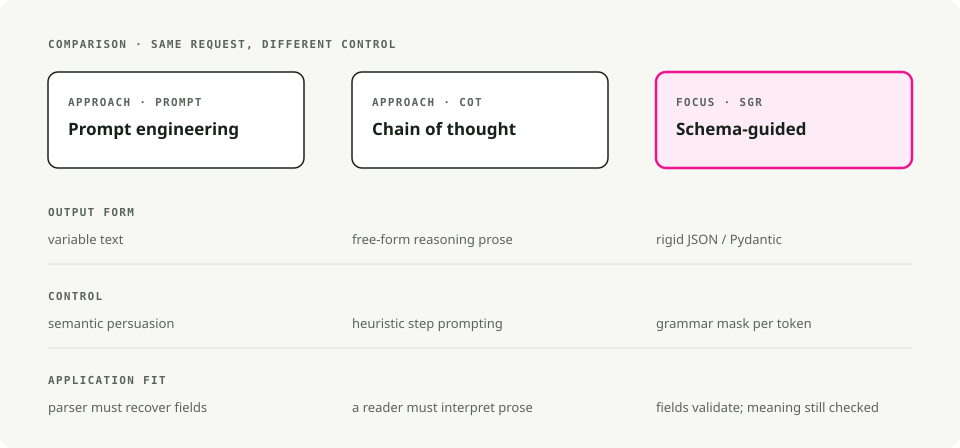
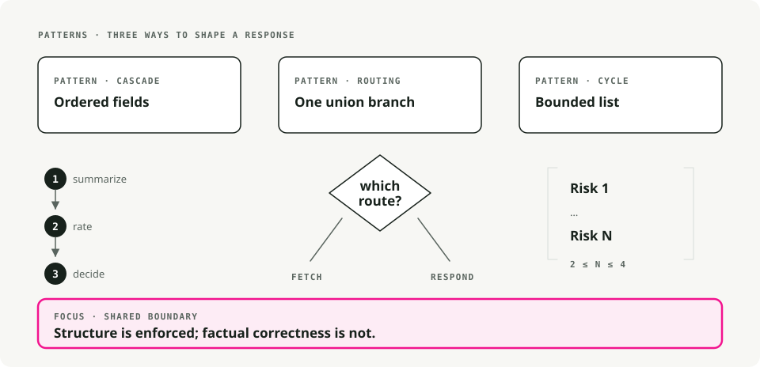
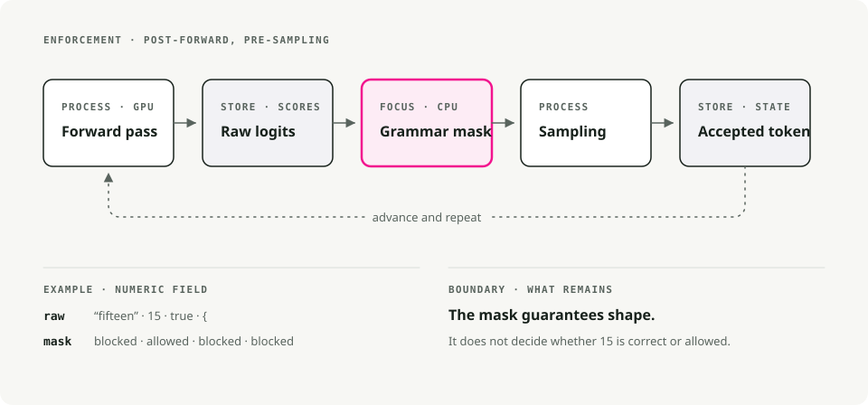
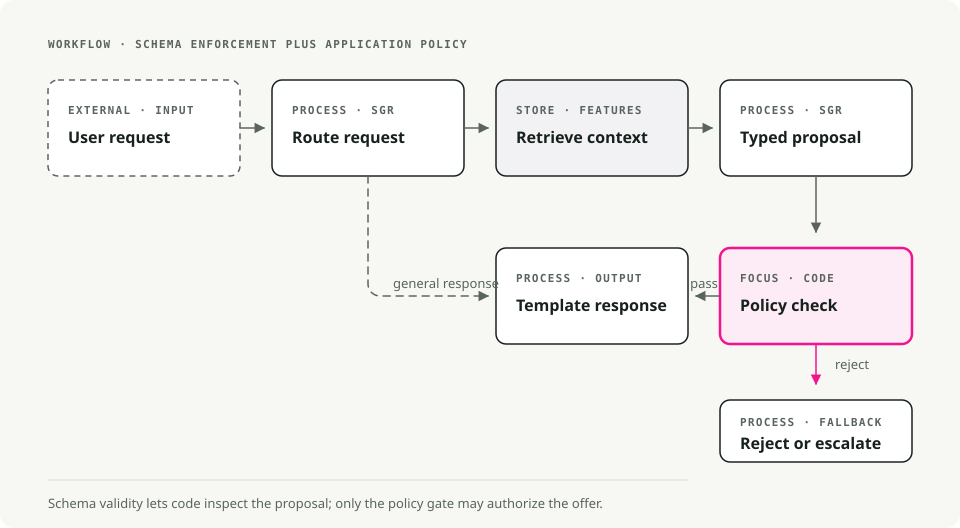

Schema-Guided Reasoning on vLLM: Structured Outputs with xgrammar and Pydantic
A retry loop is a confession. It says: I expected the model to return valid JSON, it didn't, so I'll roll the dice again. Most LLM agent code I've worked with leans heavily on retries, and the JSON still ends up broken often enough that someone wires up an alert for it.
Schema-Guided Reasoning (SGR) skips the retry game by enforcing the schema at the token level. You define the reasoning topology as a Pydantic schema, and the inference engine masks out any token that would violate it before sampling. The output is valid by construction, not by retry.
TL;DR. SGR uses constrained decoding to pin an LLM's output to a Pydantic schema you control. Pair it with vLLM's xgrammar backend and you get valid JSON every time, with negligible latency overhead.
What is Schema-Guided Reasoning?
Schema-Guided Reasoning is a technique that Rinat Abdullin wrote up in 2024. Instead of letting the model freely complete text (which can be inconsistent or ambiguous), you give it a strict template that defines:
- what steps it must go through, so it cannot skip the analysis
- the order of those steps, so the reasoning runs from data to decision
- where it should focus attention, so the depth lands where it matters
Think of it as a cognitive checklist the model has to follow.

Why SGR matters
When you define a schema with fields like churn_analysis, margin_math, and max_discount_percent, the model has to populate them in order. It cannot jump straight to the discount decision without first writing out the analysis.
That gives you:
- reproducible reasoning across repeated runs
- auditable outputs where every step is inspectable
- intermediate fields you can grade against a test dataset
- smaller models that become workable, since the schema enforces what the model would otherwise have to learn
- the 5-10% accuracy bump commonly reported on production workloads
SGR vs Chain of Thought vs prompt engineering
The three approaches differ mostly in how strongly they constrain the model.

| Feature | Prompt Engineering | Chain of Thought | Schema-Guided Reasoning |
|---|---|---|---|
| Output Structure | Variable text | Free-form prose | Rigid JSON/Pydantic |
| Control Mechanism | Semantic persuasion ("Please output JSON") | Heuristic prompting ("Let's think step by step") | Constrained decoding (grammar-based) |
| Reasoning Flow | Model determines | Model determines | Developer determines (schema topology) |
| Auditability | Low (requires parsing) | Low (requires reading prose) | High (field-level inspection) |
| Integration | Difficult (regex parsing) | Difficult (variable format) | Trivial (native object deserialization) |
| Error Rate | High (format variability) | Moderate (hallucination of format) | Near-zero (syntax enforced by engine) |
| Model Requirement | Strong instruction following | Strong reasoning capability | Works with smaller models too |
Prompt engineering: semantic persuasion
Please analyze the customer data and output your response as valid JSON
with the following structure: {"discount": <number>, "reason": <string>}
Be careful with the formatting!
You are hoping the model's understanding of "output JSON" outweighs its tendency to be conversational. A model update, a temperature change, or a different few-shot example can break your parser.
Chain of Thought: better reasoning, same structure problem
Let's think step by step:
1. First, I'll analyze the customer's churn risk...
2. Then I'll calculate the margin...
3. Therefore, I recommend a 15% discount.
CoT improves reasoning accuracy but makes structure worse. The output is unpredictable prose that is nearly impossible to parse reliably. You usually end up making a second LLM call just to extract the structured data.
SGR: structured chain of thought
SGR keeps CoT's intuition that intermediate reasoning improves accuracy. It just formalizes the steps:
class PricingLogic(BaseModel):
# 1. Data Analysis (must complete before decision)
churn_analysis: str = Field(..., description="Analyze churn_probability")
financial_analysis: str = Field(..., description="Analyze cart_value and margin")
# 2. Math Enforcement (explicit calculation)
margin_math: str = Field(..., description="Calculate: 'Cart $X * Y% = $Z'")
# 3. Decision Constraint (bounded by prior analysis)
max_discount_percent: float = Field(..., description="Max allowed discount")
# 4. Final Output
offer_code: str
customer_message: str
The model cannot output max_discount_percent until churn_analysis, financial_analysis, and margin_math are populated. The schema enforces the reasoning order.
SGR patterns
SGR has three core patterns that compose into bigger workflows.

1. Cascade: sequential reasoning steps
Cascade enforces a reasoning order. Each field has to be completed before the next.
from pydantic import BaseModel
from typing import Literal, Annotated
from annotated_types import Ge, Le
class CandidateEvaluation(BaseModel):
"""Evaluate a job candidate with enforced reasoning order."""
# Step 1: Summarize (forces context awareness)
brief_candidate_summary: str
# Step 2: Rate (bounded integer)
rate_skill_match: Annotated[int, Ge(1), Le(10)]
# Step 3: Decide (constrained choices)
final_recommendation: Literal["hire", "reject", "hold"]
Good fits: candidate evaluation, document classification, compliance analysis, medical diagnosis.
The model has to write brief_candidate_summary before it can rate, and rate before it can recommend. There is no shortcut.
2. Routing: a semantic switch statement
Routing makes the model commit to one path from a set of options, implemented with Union types.
from pydantic import BaseModel
from typing import Literal, Union
class FeatureLookup(BaseModel):
"""Route to database lookup."""
rationale: str
tool_name: Literal["fetch_user_features"] = "fetch_user_features"
user_id: str
class GeneralResponse(BaseModel):
"""Standard response for non-pricing queries."""
tool_name: Literal["respond"] = "respond"
content: str
class RouterSchema(BaseModel):
"""The model must pick exactly ONE branch."""
action: Union[FeatureLookup, GeneralResponse]
Good fits: intent classification, tool selection, support triage, multi-agent dispatch.
The Literal discriminator (tool_name) makes the model pick a single branch and fill in only the fields that branch needs.
3. Cycle: repeated reasoning with lists
Cycle forces the model to produce multiple items, with bounds on how many.
from pydantic import BaseModel
from typing import List, Literal, Annotated
from annotated_types import MinLen, MaxLen
class RiskFactor(BaseModel):
explanation: str
severity: Literal["low", "medium", "high"]
class RiskAssessment(BaseModel):
"""Generate 2-4 risk factors."""
factors: Annotated[List[RiskFactor], MinLen(2), MaxLen(4)]
Good fits: risk assessment, issue extraction, parallel tool calls, multi-step planning.
The MinLen and MaxLen bounds force at least 2 and at most 4 items. Combined with Routing, this is how you dispatch a fixed-width batch of tool calls.
Making SGR work: constrained decoding
The patterns above are just Pydantic schemas. The thing that makes them binding is constrained decoding (also called Structured Output).
Constrained decoding modifies the token generation step. Instead of letting the model sample freely from its vocabulary, the engine applies a grammar mask that blocks tokens that would violate the schema. It happens at the inference engine, not in your application code.
[!TIP] SGR does not require "reasoning models" like o1 or DeepSeek-R1. It works fine with instruction-tuned models, and especially well with models distilled from reasoning ones.
Cloud providers that support it
Most modern LLM providers offer structured outputs through constrained decoding:
| Provider | Support |
|---|---|
| OpenAI | Structured Outputs (including Azure). GPT-5 uses JSON Schema via llguidance |
| Google/Gemini | JSON Schema support since Nov 2025 (Pydantic and Zod) |
| Mistral | Custom Structured Output |
| Grok | Structured Outputs for multiple models |
| Fireworks AI | JSON Schema |
| Cerebras | Structured Outputs |
| OpenRouter | Depends on downstream provider, maps to JSON Schema |
Inference engines that support it
For self-hosted models, the major engines all have a constrained decoding backend:
| Engine | Backend |
|---|---|
| vLLM | xgrammar or guidance |
| SGLang | Outlines, XGrammar, or llguidance |
| TensorRT-LLM | GuidedDecoding |
| Ollama | Structured Outputs |
Why this article focuses on vLLM and xgrammar
A few reasons:
- vLLM is the most widely deployed open-source LLM inference engine, so what you build here ports easily.
- xgrammar is implemented in C++ and adds negligible latency.
- vLLM's API is OpenAI-compatible, which keeps migration from cloud providers cheap.
- xgrammar handles complex nested schemas, unions, and recursive structures.
The next section walks through how xgrammar actually enforces a schema at the token level.
How xgrammar enforces schemas
This part is worth understanding precisely, because it changes how you debug and tune SGR workflows.

Where the masking happens
xgrammar modifies the output logits after the model's forward pass and before sampling. It does not change the model itself; it filters which tokens can be selected.
A standard inference loop looks like this:
1. Input tokens → GPU Forward Pass → Logits (probability scores for all ~128K tokens)
2. Logits → Sampling (temperature, top-p, etc.) → Next Token
3. Repeat until done
xgrammar slips between steps 1 and 2:
1. Input tokens → GPU Forward Pass → Raw Logits
2. Raw Logits → xgrammar Logits Processor → Masked Logits
3. Masked Logits → Sampling → Next Token (guaranteed valid)
4. Repeat until done
The model still computes its full probability distribution on the GPU. xgrammar then runs on the CPU and applies a bitmask to those logits before sampling. Invalid tokens get their logits set to -∞, which makes their probability exactly 0 after softmax.
Two phases
xgrammar splits the work into compile-time and runtime, which is what makes it fast.
Phase 1: grammar compilation, once per schema
# This happens once per schema
tokenizer_info = xgr.TokenizerInfo.from_huggingface(tokenizer)
grammar_compiler = xgr.GrammarCompiler(tokenizer_info)
compiled_grammar = grammar_compiler.compile_json_schema(schema_json)
During compilation, xgrammar:
- Converts the JSON Schema to a Context-Free Grammar.
- Builds a Pushdown Automaton (PDA), which is a state machine with a stack so it can handle nested structures like
{"a": {"b": {"c": ...}}}. - Pre-computes which tokens are valid at each grammar position. The result is the "adaptive token mask cache."
- Categorizes tokens as "context-independent" (cacheable) or "context-dependent" (must be checked at runtime against the stack state).
[!NOTE] About 99% of tokens turn out to be context-independent and end up cached (XGrammar paper). Most validity checks at runtime are just cache lookups, which is why xgrammar is fast.
Phase 2: runtime mask generation, every token
At each generation step:
- The
GrammarMatchertracks the current position in the grammar. - It looks up the pre-computed mask for context-independent tokens.
- It runs the PDA to check the remaining context-dependent tokens.
- It combines them into a final bitmask and applies it to the logits.
Why pushdown automata and not regex?
Because of nesting. A regular expression (a finite state machine) cannot reliably match structures like:
{ "user": { "profile": { "settings": { "theme": "dark" } } } }
The hard part is the closing braces }}}: you need to remember how many you opened. A Pushdown Automaton has a stack that tracks this, so it can handle arbitrary nesting depth. That is also why xgrammar can enforce Union types, nested objects, and recursive schemas, where regex-based approaches fall short.
A concrete example: generating a float field
When the model is generating "max_discount_percent":, xgrammar knows from the schema that a float comes next. The mask:
- allows (probability unchanged):
0,1,2, ...,9,.,- - blocks (probability set to 0):
",{,[,true,false,null, and the rest of the 128K+ vocabulary
The forward pass might have assigned high probability to the word "fifteen". After xgrammar's mask, that token has probability 0. The model has to output digits.
Why "near-zero overhead"
Three reasons:
- Parallel execution. Mask computation on the CPU overlaps with the next forward pass on the GPU. While the GPU is computing logits for token N+1, the CPU is computing the mask for token N.
- Caching. Most of the validity work is done at compile time. Runtime is mostly cache lookups.
- C++ implementation. The hot path is C++, not Python, and the mask is applied to logits in place.
In benchmarks xgrammar shows negligible overhead, and structured generation can occasionally be faster than unconstrained generation because the constrained vocabulary makes sampling cheaper.
Practical implementation with vLLM
The reference is the sgr-discount-manager project, a small demo that uses SGR for dynamic pricing.

Project structure
sgr/
├── agent.py # Main orchestration
├── models/
│ └── schemas.py # Pydantic SGR schemas
├── prompts/
│ ├── routing.py # Phase 1 prompts
│ └── pricing.py # Phase 3 prompts
├── store/
│ └── hybrid_store.py # Hot/Cold data retrieval
└── utils/
└── llm_client.py # LLM client wrapper with xgrammar
Step 1: define the schemas
# sgr/models/schemas.py
from pydantic import BaseModel, Field
from typing import Literal, Union
# --- Phase 1: Routing (Union for branching) ---
class FeatureLookup(BaseModel):
"""Route to DB lookup if pricing context is needed."""
rationale: str
tool_name: Literal["fetch_user_features"] = "fetch_user_features"
user_id: str
class GeneralResponse(BaseModel):
"""Standard response for non-pricing queries."""
tool_name: Literal["respond"] = "respond"
content: str
class RouterSchema(BaseModel):
action: Union[FeatureLookup, GeneralResponse]
# --- Phase 2: Pricing Logic (Cascade for sequential reasoning) ---
class PricingLogic(BaseModel):
"""
Strict reasoning topology for dynamic pricing.
Fields are ordered to enforce the analysis→decision flow.
"""
# 1. Data Analysis (Reflection)
churn_analysis: str = Field(...,
description="Analyze churn_probability (High > 0.7).")
financial_analysis: str = Field(...,
description="Analyze cart_value and profit_margin.")
# 2. Hard Math Enforcement
margin_math: str = Field(...,
description="Calculate absolute profit: 'Cart $200 * 0.20 Margin = $40'.")
# 3. The Decision Constraint
max_discount_percent: float = Field(...,
description="Max allowed discount %. NEVER exceed margin.")
# 4. Final Output
offer_code: str = Field(..., description="Generated code (e.g. SAVE20).")
customer_message: str = Field(..., description="The final polite offer text.")
Step 2: an LLM client that turns on xgrammar
# sgr/utils/llm_client.py
from openai import OpenAI
from pydantic import BaseModel
from typing import TypeVar
import json
T = TypeVar("T", bound=BaseModel)
class LLMClient:
"""Wrapper for vLLM with xgrammar-enforced structured generation."""
def __init__(self, base_url: str = "http://localhost:8000/v1"):
self.client = OpenAI(base_url=base_url, api_key="EMPTY")
self.model = self._get_available_model()
def _get_available_model(self) -> str:
"""Auto-detect the model running on vLLM server."""
try:
models = self.client.models.list()
if models.data:
return models.data[0].id
except Exception:
pass
return "Qwen/Qwen2.5-7B-Instruct"
def run_sgr(self, messages: list[dict], schema_class: type[T]) -> T:
"""Run inference with Schema-Guided Response constraints.
Uses vLLM's guided_json with xgrammar backend to enforce
strict schema constraints at the token generation level.
"""
schema_dict = schema_class.model_json_schema()
# Enhance system message with schema for model guidance
enhanced_messages = messages.copy()
if enhanced_messages and enhanced_messages[0]["role"] == "system":
schema_json = json.dumps(schema_dict, indent=2)
enhanced_messages[0] = {
"role": "system",
"content": (
enhanced_messages[0]["content"]
+ f"\n\nRespond with JSON matching this schema:\n{schema_json}"
),
}
# vLLM's guided_json with the xgrammar backend
completion = self.client.chat.completions.create(
model=self.model,
messages=enhanced_messages,
temperature=0.1, # Low temp for deterministic reasoning
extra_body={
"guided_json": schema_dict, # Pydantic schema as dict
"guided_decoding_backend": "xgrammar", # Hardware-enforced
},
)
raw_response = completion.choices[0].message.content
return schema_class.model_validate_json(raw_response)
[!NOTE] >
guided_jsonaccepts a JSON Schema dict. Withguided_decoding_backend: "xgrammar", the LLM can only generate tokens that form valid JSON matching your schema.
Step 3: orchestrate the agent
# sgr/agent.py
from .models.schemas import PricingLogic, RouterSchema
from .prompts.routing import build_routing_prompt
from .prompts.pricing import build_pricing_context_prompt, ASSISTANT_FETCH_MESSAGE
from .store.hybrid_store import HybridFeatureStore
from .utils.llm_client import LLMClient
def pricing_agent(user_query: str, user_id: str) -> str:
"""Process a pricing query with three-phase SGR workflow."""
llm = LLMClient()
feature_store = HybridFeatureStore()
# Build conversation history
history = [
{"role": "system", "content": build_routing_prompt(user_id)},
{"role": "user", "content": user_query},
]
# --- Phase 1: Routing (Uses RouterSchema) ---
print(f"🤖 Processing: '{user_query}' for {user_id}")
decision = llm.run_sgr(history, RouterSchema)
print(f"📍 Routing decision: {decision.action.tool_name}")
if decision.action.tool_name == "respond":
return decision.action.content
# --- Phase 2: Context Retrieval ---
if decision.action.tool_name == "fetch_user_features":
print(f"🔍 Fetching features for {user_id}...")
context = feature_store.get_user_context(user_id)
if not context:
return "Error: User profile not found."
print(f" [Data] LTV: ${context.get('user_ltv')} | "
f"Margin: {context.get('cart_profit_margin', 0) * 100}%")
# Inject context into conversation
history.append({"role": "assistant", "content": ASSISTANT_FETCH_MESSAGE})
history.append({
"role": "user",
"content": build_pricing_context_prompt(
churn_prob=context.get("churn_probability", 0.5),
cart_val=context.get("current_cart_value", 100),
margin=context.get("cart_profit_margin", 0.2),
user_ltv=context.get("user_ltv", 0),
),
})
# --- Phase 3: SGR Logic Execution (Uses PricingLogic) ---
print("🧠 Calculating Offer (Schema Enforced)...")
offer = llm.run_sgr(history, PricingLogic)
# Audit log — the SGR benefit: explicit reasoning traces
print(f" [Audit] Math: {offer.margin_math}")
print(f" [Audit] Max Allowed: {offer.max_discount_percent}%")
return offer.customer_message
return "I'm sorry, I couldn't process your request."
if __name__ == "__main__":
response = pricing_agent("I want a discount or I'm leaving!", "user_102")
print(f"\n💬 Final Reply: {response}")
Step 4: run vLLM with xgrammar
# Start vLLM server with xgrammar backend (default in recent versions)
python -m vllm.entrypoints.openai.api_server \
--model Qwen/Qwen2.5-7B-Instruct \
--port 8000
# Run the agent
uv run python -m sgr.agent
Example output
🤖 Processing: 'I want a discount or I'm leaving!' for user_102
📍 Routing decision: fetch_user_features
🔍 Fetching features for user_102...
[Data] LTV: $1,500 | Margin: 20%
🧠 Calculating Offer (Schema Enforced)...
[Audit] Math: Cart $200 * 0.20 Margin = $40
[Audit] Max Allowed: 15.0%
💬 Final Reply: We value your loyalty! Here's a special 15% discount
with code SAVE15. This reflects our appreciation for your continued
business with us.
The audit log shows the model's actual work: it computed the margin ($40 on a $200 cart at 20%) and bounded the discount so the offer stays within the profit constraint.
Best practices
Schema design
- Order fields by reasoning flow. Analysis fields go before decision fields.
- Write descriptive
Fielddescriptions. They guide the model's attention as much as the field name does. - Constrain with
LiteralandAnnotated. UseLiteral["a", "b"]for enums andAnnotated[int, Ge(1), Le(10)]for bounds. - Keep schemas focused. One schema per reasoning phase, then compose with multiple calls.
vLLM configuration
- Use a low temperature (0.1-0.3) for deterministic reasoning.
- Let xgrammar handle the structure. Do not fight it with formatting instructions in the prompt.
- Watch token usage. SGR usually uses fewer tokens than CoT because there is no verbose prose.
Production considerations
- Version your schemas the same way you version APIs.
- Even with SGR, network and server errors still need graceful handling.
- Log raw SGR outputs for compliance and debugging.
- Test with edge cases so the schema holds at the boundaries.
Conclusion
SGR is what gets you from "works in a demo" to "works in production." You define the reasoning topology in Pydantic, let xgrammar enforce it at decode time, and the output is:
- valid every time, with no retry loops or parsing failures
- auditable at the field level
- usable with smaller models, because they no longer have to nail the format on their own
- cheaper to run, since you use fewer tokens, fewer retries, and smaller models
The sgr-discount-manager demo wires every code sample from this post against a real vLLM server. Clone it and start adapting the schemas to your own workflow.
Key Takeaways
- Schema-Guided Reasoning makes the reasoning topology explicit instead of hoping the model follows prose instructions.
- Constrained decoding prevents invalid JSON at generation time, which is cleaner than validating and retrying afterward.
- Put analysis fields before decision fields when the schema should force reasoning before output.
- Use SGR when downstream code depends on structure, not when free-form prose is the product.
References
SGR Framework
- Schema-Guided Reasoning (SGR) — Rinat Abdullin's original framework
- SGR Patterns — Cascade, Routing, Cycle patterns
xgrammar
- XGrammar: Flexible and Efficient Structured Generation Engine for Large Language Models — Yixin Dong et al., arXiv:2411.15100 (technical paper with benchmarks)
- xgrammar GitHub — Fast, flexible structured generation library
- xgrammar Documentation — Official docs with quick start guide
- xgrammar Quick Start — Getting started with xgrammar
- Achieving Efficient Structured Generation with XGrammar — MLC blog post on xgrammar internals
vLLM
- vLLM Structured Outputs — Official documentation
Demo Project
- sgr-discount-manager — Working demo with all code examples from this post